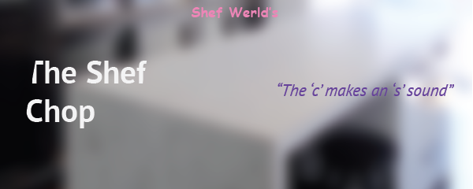
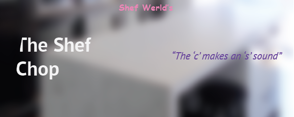

What's Happening
Shef Kerbi's Apparel
Collection 3 of Shef Kerbi's Apparel has officially launched!
Go buy our epic new items. The game controllers and Shef Kerbi hat are still for sale though.
Shef Kerbi News Network
Issue #25 of Shef Kerbi News Network is now out!
Read it here!
The Shef Chop
The Shef Chop has officially launched!
If you would like something to be made, call us up!
The Shef Werld Gang
Shef Werld Executives
Shef Kerbi
- CEO, Shef Werld (de facto owner of the CatsUnited account since September 2018)
Mr MemeoftheWeek
- CEO, Meme of the Week (the show with the best upload schedule)
Tom Nook
- CEO, Shef Kerbi's Apparel; Shef Werld Financial Manager
Kawsaki
- CEO, The Shef Chop; The OG Enemy of Kerbi turned 16 Michelin star chef
Shef Kerbi News Network
Note that everyone here has probably drawn a comic at some time during their career
Shef Kerbi (Executive)
Apple the Cat
- Former Website Operater, News Reporter
Reali
- News Reporter, Advertiser
Bon Starbuckle
- "Sequential Artist"
Zeke Teddy
- News Reporter, The Guy that Presents the Weather
Keysun DDDO
- ｃｌｏｃｋ ｃｌｅａｎｅｒ
straw!reali
- Advertiser
Carmes
- Advertiser, News Reporter
Michael Comma
- Advertiser
hello i am john gameman porfesonal game and man man
- i am john gameman i was going to be newsgameman but then pengun told me to be sports newsgameman call of duty a sport?
Ted Pratico
- News Reporter
Austin
- Weather Man
Meme of the Week
The show with the most consistent upload schedule in the world
Mr MemeoftheWeek (Executive)
Scratch 3 Cat
- The Scratch 3 Cat
Scratch 2 Cat
- The Scratch 2 Cat
Scratch 1 Cat
- The Scratch 1 Cat (best cat)
Ryk
- A personal friend of Shef Kerbi, joined Meme of the Week in February 2019
Mafia City Man
- Featured in the first Meme of the Week. Now works with Meme of the Week and deals big money behind the scenes
Shef Kerbi's Apparel
"our amazon prime very predictive shipping allows us to know what you're going to buy and ship it to you when you want it!"
Tom Nook (Executive)
Tom Nook's Kids
- Obviously
Isabelle from Animal Crossing
- Cool doggo. Working with the boys on Collection 3 of Shef Kerbi's Apparel
Gardevoir
- "Quality Control" (it's actually done by tom nook and sometimes shef kerbi we just say we have a separate quality control person so that our stuff sound more high quality)
Big T-Posing Noob
- Diet Water Supplier
Everyone
who's bought an item from Shef Kerbi's Apparel and appreciated our Amazon Prime same second shipping.
The Shef Chop
"I've never used the Requests forum because it's cursed."
Kawsaki (executive)
Wingull
- "tecnologicool contributions". Inventor of the 3D Printer
Nintendo Switch Lite
- Other
Jerry Springer
- Contracted to work on Springer. Trash TV God.
Mexican Ghost Dad
- Missing since 2018. Wanted for 142 charges for piracy
Cynthia
- Honestly I don't know, but has connections to Shef Werld.
TSM_Liquid_FaZe_Ninja
- Back from the Bahamas and now doing more 90s than ever before.
THE TRUE OWNER!!!!?????
- Went missing in 2016.
DISCLAIMER: This website and everything in it is fictional. No one related to Shef Werld is affiliated with Nintendo in any way. All products shown here are designed for parody purposes.